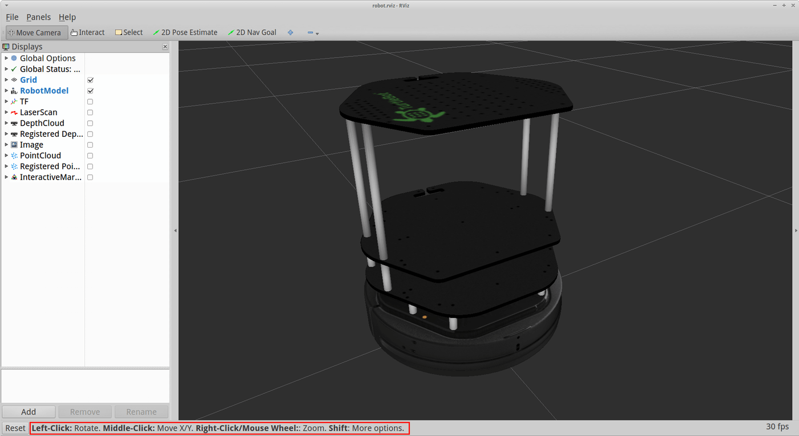
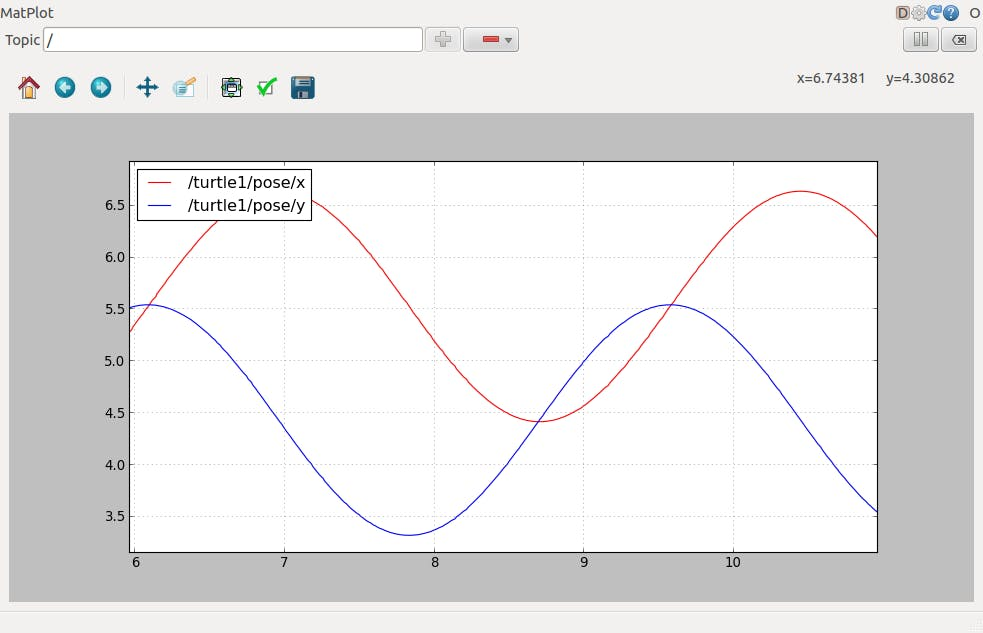
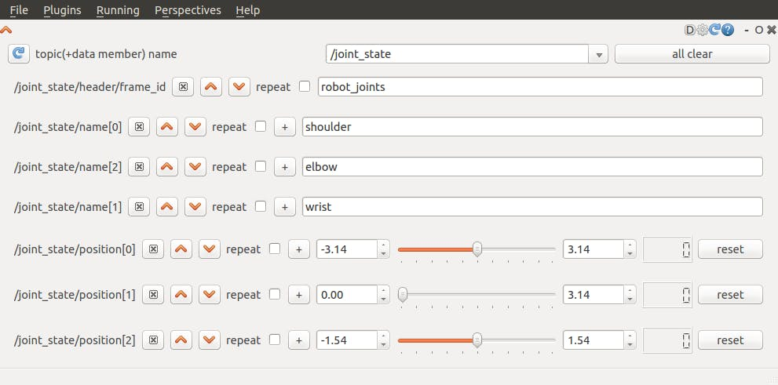
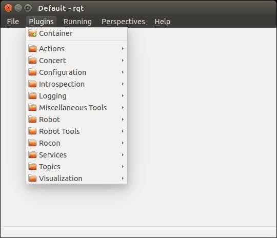

ROSを始めよう その６
前回の内容
その５今回の内容
今回はROSのGUIについて見ていきましょう。参考：http://wiki.ros.org/ja/visualization/Tutorials
可視化ツールrviz
rvizというツールを使うと、ロボットの内部情報やセンサの可視化ができます。立ち上げ方
roscoeを立ち上げた後、$ rosrun rviz rvizで立ち上げます。Turtlebotシミュレーターで使ってみる
シミュレーターのインストール
$ sudo apt-get install ros-kinetic-turtlebot-gazebo
$ source ~/.bashrc
立ち上げる
$ roslaunch turtlebot_gazebo turtlebot_world.launch
別のターミナルで自律移動プログラムも立ち上げる
$ roslaunch turtlebot_gazebo amcl_demo.launch
別のターミナルでrvizを立ち上げる
$ rosrun rviz rviz
画面左に並んでいるのは表示中のものです。

例えば、
By display typeからRobotModelを選ぶと、ロボットのモデルが表示されます。
By topicから/mapのMapを選ぶと、あらかじめ作成された地図が表示されます。
/camera/depth/pointsのPointCloud2を選ぶと、Kinectのセンサ情報が表示されます。
/odomのOdometryを選ぶと、ロボットの現在位置が表示されます。
/move_base/NavfnROS/planのPathを選ぶと、ロボットの行きたい経路が表示されます。
これらはPublishされているTopicを３次元的に表示させているのです。
また、画面上方の2D Navi Goalボタンを押して、ロボット近くの地面をドラッグすると、ロボットを自律移動させることができます。表示される緑の矢印の根元がゴール位置、向きがロボットのゴール姿勢となります。
rqt
これまでもrqt_graphやrqt_consoleなどを使ってきましたが、その仲間を紹介します。rqt_plot
PublishされているTopicの値をグラフにできます。$ rqt_plotで立ち上がります。
上の欄に/turtle1/cmd_vel/linear/xなどと書いて＋ボタンを押すか、$ rqt_plot /turtle1/cmd_vel/linear/xとして立ち上げれば良い。
rqt_ez_publisher
スライダーなどでTopicにPublishできます。
インストール
$ sudo apt-get install ros-kinetic-rqt-ez-publisher
$ roscore
$ rosrun turtles turtles_node
$ rosrun rqt_ez_publisher rqt_ez_publisher

rqt
今まで出てきた複数のrqtのモジュールを同じWindowにまとめてみましょう。$ rqtで立ち上げて、画面上のPluginsからVisualizationのPlotやEasy Message Publisherを選択すると、同じWindowにまとまります。

ジョイスティックで操縦する
ジョイスティックでロボットを操縦したい時もあると思いますので、簡単に方法を紹介します。ls -l /dev/input/js*みたいにすると認識されているジョイスティックがわかります。
まず、$ rosrun joy joy_node (/dev/input/js0以外で認識されているジョイスティックを使うなら$ rosrun joy joy_node _dev:=/dev/input/js1)を実行すると、sensor_msgs/Joy型の/joyというTopicをPublishします。
それを使って、０番ボタンを押しながら移動操作ができるプログラムを実行してみましょう。
-joy_twist.py-
import rospy
from sensor_msgs.msg import Joy
from geometry_msgs.msg import Twist
class JoyTwist(object):
def __init__(self):
self._joy_sub = rospy.Subscriber('joy', Joy, self.joy_callback, queue_size=1)
self._twist_pub = rospy.Publisher('cmd_vel', Twist, queue_size=1)
def joy_callback(self, joy_msg):
if joy_msg.buttons[0] == 1:
twist = Twist()
twist.linear.x = joy_msg.axes[1] * 0.5
twist.angular.z = joy_msg.axes[0] * 1.0
self._twist_pub.publish(twist)
if __name__ == '__main__':
rospy.init_node('joy_twist')
joy_twist = JoyTwist()
rospy.spin()
$ rosrun ros_beginner joy_twist.py cmd_vel:=/mobile_base/commands/velocityで実行します。
ちなみに$ sudo apt-get install ros-kinetic-teleop-twist-joyで機能が色々使えるようになります。
C++だと、
-joy_twist.cpp-
#include
#include
#include
class JoyTwist
{
public:
JoyTwist()
{
ros::NodeHandle node;
joy_sub_ = node.subscribe("joy", 1, &JoyTwist::joyCallback, this);
twist_pub_ = node.advertise("cmd_vel", 1);
}
void joyCallback(const sensor_msgs::Joy &joy_msg)
{
if (joy_msg.buttons[0] == 1)
{
geometry_msgs::Twist twist;
twist.linear.x = joy_msg.axes[1] * 0.5;
twist.angular.z = joy_msg.axes[0] * 1.0;
twist_pub_.publish(twist);
}
}
private:
ros::Subscriber joy_sub_;
ros::Publisher twist_pub_;
};
int main(int argc, char **argv) {
ros::init(argc, argv, "joy_twist");
JoyTwist joy_twist;
ros::spin();
}
まとめ
今回はROSのGUIについて見ていきました。次回はROSの分散機能について見ていきましょう。
その７